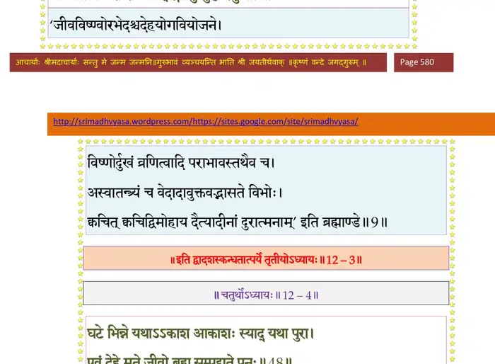

स्कन्ध 12 · अध्याय 3
श्लोक १
श्रीशुक उवाच–
दृष्ट्वाऽऽत्मनिर्जयव्यग्रान् नृपान् हसति भूरियम् ।
अहो मां विजिगीषन्ति मृत्योः क्रीडनका नृपाः ।। १ ।।
दृष्ट्वाऽऽत्मनिर्जयव्यग्रान् नृपान् हसति भूरियम् ।
अहो मां विजिगीषन्ति मृत्योः क्रीडनका नृपाः ।। १ ।।
श्लोक २
काम एष नरेन्द्राणां मोघः स्याद् विदुषामपि ।
येन फेनोपमे पिण्डे येन विस्रम्भिता नृपाः ।। २ ।।
येन फेनोपमे पिण्डे येन विस्रम्भिता नृपाः ।। २ ।।
श्लोक ३
पूर्वं निर्जित्य षड्वर्गं जेष्यामो राजमन्त्रिणः ।
ततः सचिवपौराप्तकरीन्द्रानथ कण्टकान् ।। ३ ।।
ततः सचिवपौराप्तकरीन्द्रानथ कण्टकान् ।। ३ ।।
श्लोक ४
एवं क्रमेण जेष्यामः पृथ्वीं सागरमेखलाम् ।
इत्याशाबद्धहृदया न पश्यन्त्यन्तिकेऽन्तकम् ।। ४ ।।
इत्याशाबद्धहृदया न पश्यन्त्यन्तिकेऽन्तकम् ।। ४ ।।
श्लोक ५
समुद्रावरणां जित्वा मां विशन्त्यब्धिमोजसा ।
कियदात्मजयस्यैतन्मुक्तिरात्मजये फलम् ।। ५ ।।
कियदात्मजयस्यैतन्मुक्तिरात्मजये फलम् ।। ५ ।।
श्लोक ६
यां विसृज्यैव मनवस्तत्सुताश्च कुरूद्वह ।
गता यथागतं युद्धे तां मां जेष्यन्त्यबुद्धयः ।। ६ ।।
गता यथागतं युद्धे तां मां जेष्यन्त्यबुद्धयः ।। ६ ।।
श्लोक ७
मत्कृते पितृपुत्राणां भ्रातॄणां चापि विग्रहः ।
जायते ह्यसतां राज्ये ममताबद्धचेतसाम् ।। ७ ।।
जायते ह्यसतां राज्ये ममताबद्धचेतसाम् ।। ७ ।।
श्लोक ८
ममैवेयं मही कृत्स्ना न ते मूढेति वादिनः ।
स्पर्धमाना मिथो घ्नन्ति म्रियन्ते मत्कृते नृपाः ।। ८ ।।
स्पर्धमाना मिथो घ्नन्ति म्रियन्ते मत्कृते नृपाः ।। ८ ।।
श्लोक ९
पृथुः पुरूरवा गाधिर्भरतो नहुषोऽर्जुनः ।
मान्धाता सगरो रामः खट्वाङ्गो धुन्धुहा रघुः ।। ९ ।।
मान्धाता सगरो रामः खट्वाङ्गो धुन्धुहा रघुः ।। ९ ।।
भागवततात्पर्यनिर्णय

श्लोक १०
तृणबिन्दुर्ययातिश्च संयातिः (शर्यातिः) शन्तनुर्गयः ।
भगीरथः कुवलयाश्वः ककुत्स्थो नैषधो नृगः (नृपः)।। १० ।।
भगीरथः कुवलयाश्वः ककुत्स्थो नैषधो नृगः (नृपः)।। १० ।।
श्लोक ११
हिरण्यकशिपुर्वृत्रो रावणो लोकरावणः ।
नमुचिः शम्बरो भौमो हिरण्याक्षोऽथ तारकः ।। ११ ।।
नमुचिः शम्बरो भौमो हिरण्याक्षोऽथ तारकः ।। ११ ।।
श्लोक १२
अन्ये च बहवो दैत्या राजानो ये प्रजेश्वराः ।
सर्वे सर्वविदः शूराः सर्वे सर्वजितोऽजिताः ।। १२ ।।
सर्वे सर्वविदः शूराः सर्वे सर्वजितोऽजिताः ।। १२ ।।
श्लोक १३
ममतां मय्यमर्त्यायां कृत्वोच्चैर्मत्यधर्मिणः ।
कथावशेषाः कालेन ह्यकृतार्थाः कृता अहो ।। १३ ।।
कथावशेषाः कालेन ह्यकृतार्थाः कृता अहो ।। १३ ।।
श्लोक १४
कथा इमास्ते कथिता महीयसां विताय लोकेषु यशः परेयुषाम् ।
विज्ञानवैराग्यविवक्षया विभो वचोविभूतीर्न तु पारमार्थ्यम् ।। १४ ।।
विज्ञानवैराग्यविवक्षया विभो वचोविभूतीर्न तु पारमार्थ्यम् ।। १४ ।।
श्लोक १५
यत्रोत्तमश्लोकगुणानुवादः सङ्गीयतेऽभीक्ष्णममङ्गलघ्नः ।
तमेव नित्यं शृणुतादभीक्ष्णं कृष्णेऽमलां भक्तिमभीप्समानः ।। १५ ।।
तमेव नित्यं शृणुतादभीक्ष्णं कृष्णेऽमलां भक्तिमभीप्समानः ।। १५ ।।
श्लोक १६
राजोवाच–
केनोपायेन भगवन् कलेर्दोषान् कलौ जनाः ।
विधमिष्यन्त्युपचितांस्तन्मे ब्रूहि यथा मुने।। १६ ।।
केनोपायेन भगवन् कलेर्दोषान् कलौ जनाः ।
विधमिष्यन्त्युपचितांस्तन्मे ब्रूहि यथा मुने।। १६ ।।
श्लोक १७
युगानि युगमानं च मानं प्रलयकल्पयोः ।
कालस्येश्वररूपस्य गतिं विष्णोर्महात्मनः ।। १७ ।।
कालस्येश्वररूपस्य गतिं विष्णोर्महात्मनः ।। १७ ।।
श्लोक १८
श्रीशुक उवाच–
कृते प्रवर्तते धर्मश्चतुष्पात् तज्जनैर्धृतः ।
सत्यं दया तपो दानमिति पादा विभोर्नृप ।। १८ ।।
कृते प्रवर्तते धर्मश्चतुष्पात् तज्जनैर्धृतः ।
सत्यं दया तपो दानमिति पादा विभोर्नृप ।। १८ ।।
श्लोक १९
सन्तुष्टाः करुणा मैत्राः शान्ता दान्तास्तितिक्षवः ।
आत्मारामाः समदृशः प्राय आश्रमिणो जनाः ।। १९ ।।
आत्मारामाः समदृशः प्राय आश्रमिणो जनाः ।। १९ ।।
श्लोक २०
त्रैतायां धर्मपादानां तुर्योंऽशो हीयते शनैः ।
अधर्मपादैरनृतहिंसाऽसन्तोषविग्रहैः ।। २० ।।
अधर्मपादैरनृतहिंसाऽसन्तोषविग्रहैः ।। २० ।।
श्लोक २१
तदा क्रियातपोनिष्ठा नातिहिंसा न लम्पटाः ।
त्रैवर्गिकास्त्रयीवृद्धा वर्णा ब्रह्मोत्तरा नृपाः ।। २१ ।।
त्रैवर्गिकास्त्रयीवृद्धा वर्णा ब्रह्मोत्तरा नृपाः ।। २१ ।।
श्लोक २२
तपःसत्यदयादानेष्वर्धं ह्रसति द्वापरे ।
हिंसाऽतुष्ट्यनृतद्वैधैर्धर्मस्याधर्मलक्षणैः ।। २२ ।।
हिंसाऽतुष्ट्यनृतद्वैधैर्धर्मस्याधर्मलक्षणैः ।। २२ ।।
श्लोक २३
यशस्विनो महाशालाः स्वाध्यायाध्ययने रताः ।
आढ्याः कुटुम्बिनो दृष्टा वर्णाः क्षत्रद्विजोत्तमाः ।। २३ ।।
आढ्याः कुटुम्बिनो दृष्टा वर्णाः क्षत्रद्विजोत्तमाः ।। २३ ।।
श्लोक २४
कलौ तु धर्महेतूनां पर्यासोऽधर्महेतुभिः ।
एधमानैः क्षीयमाणो ह्यन्ते सोऽपि विनश्यति ।। २४ ।।
एधमानैः क्षीयमाणो ह्यन्ते सोऽपि विनश्यति ।। २४ ।।
श्लोक २५
तस्मिन् लुब्धा दुराचारा निर्दयाः शुष्कवैरिणः ।
दुर्भगा भूरिदर्पाश्च शूद्रदासोत्तराः प्रजाः ।। २५ ।।
दुर्भगा भूरिदर्पाश्च शूद्रदासोत्तराः प्रजाः ।। २५ ।।
श्लोक २६
सत्वं रजस्तम इति दृश्यन्ते पुरुषे गुणाः ।
कालसञ्चोदितास्ते वै परिवर्तन्त आत्मनि।। २६ ।।
कालसञ्चोदितास्ते वै परिवर्तन्त आत्मनि।। २६ ।।
श्लोक २७
प्रसीदति यदा सत्वं मनोबुद्धीन्द्रियाणि च ।
तदा कृतयुगं विद्याज्ज्ञाने तपसि यद् रुचिः।। २७ ।।
तदा कृतयुगं विद्याज्ज्ञाने तपसि यद् रुचिः।। २७ ।।
श्लोक २८
यदा धर्मेषु कामेषु भक्तिर्यशसि देहिनाम् ।
तदा त्रेता रजोवृत्तिरिति जानीत बुद्धिमान्।। २८ ।।
तदा त्रेता रजोवृत्तिरिति जानीत बुद्धिमान्।। २८ ।।
श्लोक २९
यदा लोभस्त्वसन्तोषो मनोदम्भोऽथ मत्सरः ।
कर्मणां चापि काम्यानां द्वापरं तद् रजस्तमः।। २९ ।।
कर्मणां चापि काम्यानां द्वापरं तद् रजस्तमः।। २९ ।।
श्लोक ३०
यदा मायाऽनृतं तन्द्री निद्रा हिंसा विषादनम् ।
शोको मोहो भयं दैन्यं स कलिस्तामसः स्मृतः।। ३० ।।
शोको मोहो भयं दैन्यं स कलिस्तामसः स्मृतः।। ३० ।।
श्लोक ३१
यस्मात् क्षुद्रदृशो मर्त्याः क्षुद्रभाग्या महाशनाः ।
कामिनो वृत्तिहीनाश्च स्वैरिण्यश्च स्त्रियोऽसतीः।। ३१ ।।
कामिनो वृत्तिहीनाश्च स्वैरिण्यश्च स्त्रियोऽसतीः।। ३१ ।।
श्लोक ३२
दस्यूत्कृष्टा जनपदा वेदाः पाखण्डदूषिताः ।
राजानश्च प्रजाभक्ष्याः शिश्नोदरपरा द्विजाः।। ३२ ।।
राजानश्च प्रजाभक्ष्याः शिश्नोदरपरा द्विजाः।। ३२ ।।
श्लोक ३३
अव्रता वटवोऽशौचा भिक्षवश्च कुटुम्बिनः ।
तपस्विनो ग्रामवासा न्यासिनोऽत्यर्थलोलुपाः।। ३३ ।।
तपस्विनो ग्रामवासा न्यासिनोऽत्यर्थलोलुपाः।। ३३ ।।
श्लोक ३४
ह्रस्वकाया महाहारा भूर्यपत्या गतह्रियः ।
शश्वत्कटुकभाषिण्यश्चौर्यमायोरुसाहसाः।। ३४ ।।
शश्वत्कटुकभाषिण्यश्चौर्यमायोरुसाहसाः।। ३४ ।।
श्लोक ३५
पणयिष्यन्ति वै क्षुद्राः किराटान् (कटु) कूटकारिणः ।
अनापद्यपि मंस्यन्ते वार्तां साधुजुगुप्सिताम् ।। ३५ ।।
अनापद्यपि मंस्यन्ते वार्तां साधुजुगुप्सिताम् ।। ३५ ।।
श्लोक ३६
पतिं त्यक्ष्यन्ति निर्द्रव्यं भूत्या अप्यखिलोत्तमम् ।
भृत्यं विपन्नं पतयः कौलं गाश्चापयस्विनीः ।। ३६ ।।
भृत्यं विपन्नं पतयः कौलं गाश्चापयस्विनीः ।। ३६ ।।
श्लोक ३७
पितॄन् भ्रातॄन् स्वसॄर्ज्ञातीन् हत्वा सौरतसौहृदाः ।
श्वशुरश्यालसंवादा दीनाः स्त्रैणा कलौ नराः ।। ३७ ।।
श्वशुरश्यालसंवादा दीनाः स्त्रैणा कलौ नराः ।। ३७ ।।
श्लोक ३८
शूद्राः प्रतिग्रहीष्यन्ति तपो वेषोपजीविनः ।
धर्मं वक्ष्यन्त्यधर्मज्ञा अधिरुह्योत्तमासनम् ।। ३८ ।।
धर्मं वक्ष्यन्त्यधर्मज्ञा अधिरुह्योत्तमासनम् ।। ३८ ।।
श्लोक ३९
नित्यमुद्विग्नमनसो दुर्भिक्षकरकर्शिताः ।
निरन्ने भूतले राजन्ननावृष्टिभयातुराः ।। ३९ ।।
निरन्ने भूतले राजन्ननावृष्टिभयातुराः ।। ३९ ।।
श्लोक ४०
वासोऽन्नपानशयनव्यवायस्नानभूषणैः ।
हीनाः पिशाचसन्दर्शा भविष्यन्ति कलौ प्रजाः ।। ४० ।।
हीनाः पिशाचसन्दर्शा भविष्यन्ति कलौ प्रजाः ।। ४० ।।
श्लोक ४१
कलौ काकणिकेऽप्यर्थे विगृह्य त्यक्तसौहृदाः ।
त्यक्ष्यन्ति हि प्रियान् प्राणान् हनिष्यन्ति स्वकानपि।। ४१ ।।
त्यक्ष्यन्ति हि प्रियान् प्राणान् हनिष्यन्ति स्वकानपि।। ४१ ।।
श्लोक ४२
न रक्षिष्यन्ति मनुजाः स्थविरौ पितरावपि ।
पुत्रीं भार्यां च कुलजां क्षुद्राः शिश्नोदरम्भराः ।। ४२ ।।
पुत्रीं भार्यां च कुलजां क्षुद्राः शिश्नोदरम्भराः ।। ४२ ।।
श्लोक ४३
कलौ न राजन् जगतां परं गुरुं त्रिलोकनाथानतपादपङ्कजम् ।
प्रायेण मर्त्या भगवन्तमच्युतं यक्ष्यन्ति पाखण्डविभिन्नचेतसः ।।४३।।
प्रायेण मर्त्या भगवन्तमच्युतं यक्ष्यन्ति पाखण्डविभिन्नचेतसः ।।४३।।
श्लोक ४४
यन्नामधेयं म्रियमाण आतुरः पतन्
स्खलन् वा विवशो गृणन् पुमान् ।
विमुक्तकर्मार्गल उत्तमां गतिं प्राप्नोति
यक्ष्यन्ति न तं कलौ जनाः ।। ४४ ।।
स्खलन् वा विवशो गृणन् पुमान् ।
विमुक्तकर्मार्गल उत्तमां गतिं प्राप्नोति
यक्ष्यन्ति न तं कलौ जनाः ।। ४४ ।।
श्लोक ४५
पुंसां कलिकृतान् दोषान् द्रव्यदेशात्मसम्भवान् ।
सर्वं हरति चित्तस्थो भगवान् पुरुषोत्तमः ।। ४५ ।।
सर्वं हरति चित्तस्थो भगवान् पुरुषोत्तमः ।। ४५ ।।
श्लोक ४६
श्रुतः संकीर्तितो ध्यातः पूजितश्चादृतोऽपि वा ।
नृणां धुनोति भगवान् हृत्स्थो जन्मायुताशुभम् ।। ४६ ।।
नृणां धुनोति भगवान् हृत्स्थो जन्मायुताशुभम् ।। ४६ ।।
श्लोक ४७
यथा हेमि्न स्थितो वह्निर्दुर्वर्णं हन्ति धातुजम् ।
एवमात्मगतो विष्णुर्योगिनामशुभाशयम् ।। ४७ ।।
एवमात्मगतो विष्णुर्योगिनामशुभाशयम् ।। ४७ ।।
श्लोक ४८
विद्यातपःप्राणनिरोधमैत्रीतीर्थाभिषेकव्रतदानज(जा)प्यैः ।
नात्यन्तशुद्धिं लभतेऽन्तरात्मा यथा हृदिस्थे भगवत्यनन्ते ।। ४८ ।।
नात्यन्तशुद्धिं लभतेऽन्तरात्मा यथा हृदिस्थे भगवत्यनन्ते ।। ४८ ।।
श्लोक ४९
तस्मात् सर्वात्मना राजन् हृदिस्थं कुरु केशवम् ।
म्रियमाणो ह्यवहितस्ततो यासि परां गतिम् ।। ४९ ।।
म्रियमाणो ह्यवहितस्ततो यासि परां गतिम् ।। ४९ ।।
श्लोक ५०
म्रियमाणैरभिध्येयो भगवान् परमेश्वरः ।
आत्मभावं नयत्यङ्ग सर्वात्मा सर्वसम्भवः ।। ५० ।।
आत्मभावं नयत्यङ्ग सर्वात्मा सर्वसम्भवः ।। ५० ।।
श्लोक ५१
कलेर्दोषनिधे राजन्नस्ति ह्येको महान् गुणः ।
कीर्तनादेव कृष्णस्य मुक्तसङ्गः परं व्रजेत् ।। ५१ ।।
कीर्तनादेव कृष्णस्य मुक्तसङ्गः परं व्रजेत् ।। ५१ ।।
श्लोक ५२
कृते यद् ध्यायतो विष्णुं त्रेतायां यजतो मखैः ।
द्वापरे परिचर्यायाः कलौ तद् हरिकीर्तनात् ।। ५२ ।।
द्वापरे परिचर्यायाः कलौ तद् हरिकीर्तनात् ।। ५२ ।।
।। इति श्रीमद्भागवते द्वादशस्कन्धे तृतीयोऽध्यायः ।।